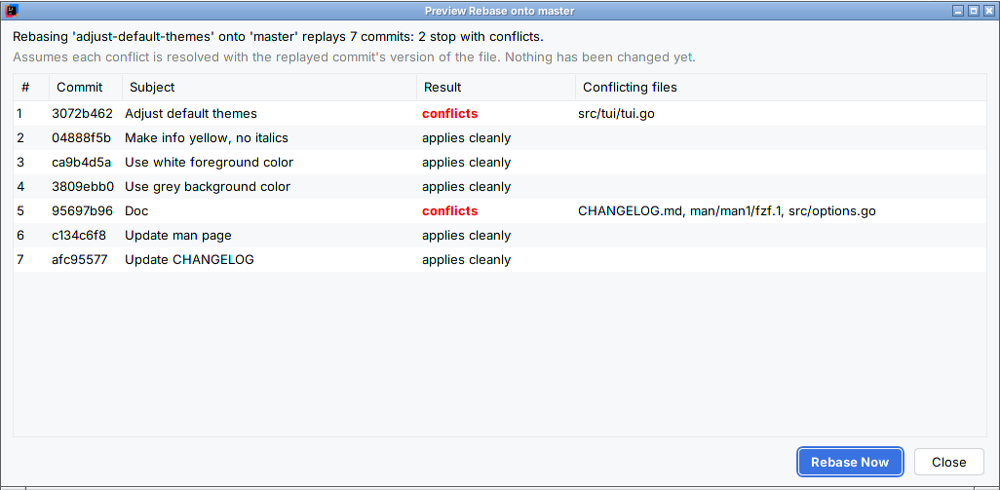
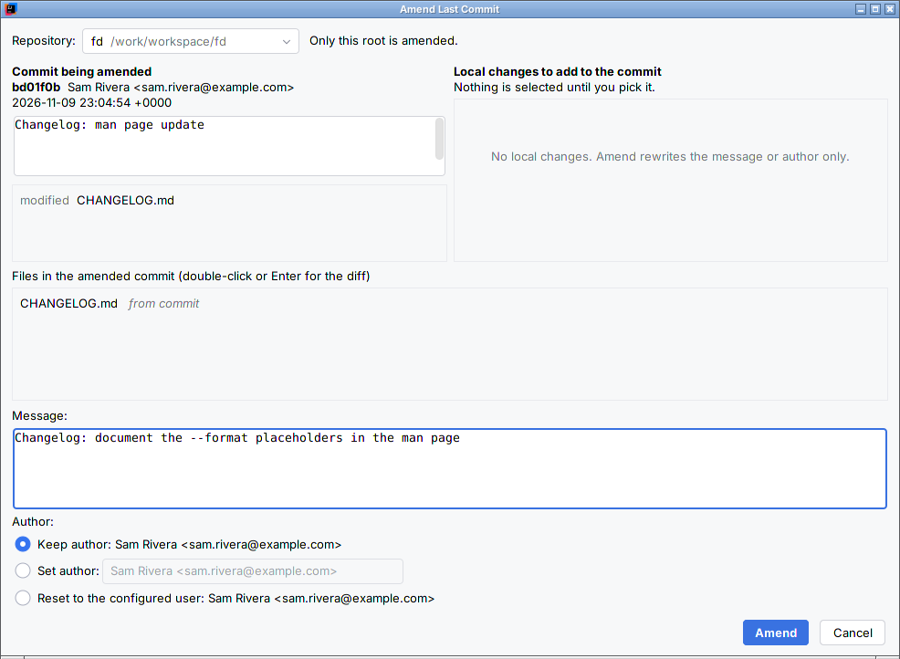

Histsight quick start
Installing Histsight, the two free features, and what the licence adds. Back to the Histsight product page.
Install (JetBrains IDEs 2025.1 or later)
- In the IDE, open Settings > Plugins, type Histsight in the search box and click Install. The listing is in review and not on JetBrains Marketplace yet; until it is live, the search finds nothing.
- The IDE's bundled Git plugin must be enabled (it is by default). Restart if the IDE asks.
Histsight works with the bundled Git integration of IntelliJ IDEA, PyCharm, WebStorm, PhpStorm, GoLand, Rider and the other JetBrains IDEs, version 2025.1 and later. Tested in IntelliJ IDEA 2025.1.7 and 2026.3 on Linux, with Git 2.43 and 2.51; Windows, macOS, the other IDEs and Remote Development have not been tested yet. The rebase preview needs Git 2.40 or later; everything else works with any Git the IDE supports.
Merge modes (free)
- Open the Branches popup (the branch name in the toolbar, or Ctrl+Shift+`), pick any branch other than the current one and open its submenu. The same entries are in the context menu of a branch in the Branches pane of the Git tool window's Log tab.
- At the bottom: Merge into current, fast-forward only and Merge into current, always create a merge commit. The word in brackets says what will happen: fast-forward, already up to date or diverged.

- Fast-forward only moves the current branch forward when the selected branch is strictly ahead. If the two have diverged, nothing changes; the notification names both branches and offers Rebase instead or Merge normally, which hand over to the IDE's own rebase and merge.
- Always create a merge commit records a two-parent merge commit even when a fast-forward was possible (
git merge --no-ff). - The mode you click applies to that one merge. Your Git configuration and the IDE's own merge entry are unchanged.
- Local changes or untracked files in the way: Git refuses and nothing changes; the notification names the files. For local changes it offers Stash, merge, restore, the same merge with Git's
--autostash. - Several repositories: each repository with the branch is merged, and one notification lists every outcome. Merge conflicts open the IDE's own Conflicts dialog.
Pushed-commit warning (free)
Amend as usual: tick Amend in the Commit tool window. If a remote-tracking branch already contains the commit, one confirmation names the branch (for example origin/vim-async; with many, your upstream and two more, and the rest counted). Cancel is the default button; Amend anyway goes on; Don't ask again for this repository turns it off for that repository only. A commit that is only local asks nothing. Turn a silenced warning back on in Settings > Tools > Histsight.

Rebase preview (licensed)
- Check out the branch you want to rebase. In the Branches popup or pane, open the submenu of the branch to rebase onto and choose Preview Rebase onto '<branch>'….
- The dialog lists, in order, every commit the rebase would replay, each marked applies cleanly or conflicts, with the conflicting files. If untracked files would be overwritten by the target branch, the first line says Git will not start the rebase and names them.
- Rebase Now hands over to the IDE's own rebase; Close leaves everything as it was. The preview never touches your working tree, index, branches or reflog.

The preview assumes each conflict is resolved with the replayed commit's own version of the files, which is what Accept in the Yours column of the IDE's Conflicts dialog does during a rebase. A different resolution can change what happens to later commits. Long previews run in the background with progress and Cancel.
Message-only and author amends (licensed)
- Open Git > Amend Last Commit…, the pencil button in the Commit tool window toolbar, or Find Action ("Amend Last Commit").
- In a project with several repositories, pick one in Repository; only that root is amended.
- With no local change selected, Amend rewrites only the message, the author, or both. Staged changes you did not pick stay staged and out of the commit. The author can be typed (
Name <email>) or reset to your configured user. - To add changes, tick them in Local changes to add to the commit. The list below marks each file from commit, from local changes or both; double-click a file for a three-pane diff: before the commit, the commit, after the amend.

Licence and trial
The merge modes and the warning are free and never lock. Without a licence, each licensed feature shows one line with the price and Get a licence or trial, which opens the IDE's own licence dialog, only when you click it. Nothing appears at startup. The licence is a JetBrains Marketplace perpetual licence: $9 once, the same for personal and commercial use, every update included, nothing renews. The trial is 30 days of every feature. Settings > Tools > Histsight shows your licence state.
Known limits
- Rebase preview: Git 2.40 or later; 2.42 or later to read
.gitattributesmerge settings exactly as the rebase will; 2.44 or later in a partial clone. Plaingit rebase <branch>only:--rebase-merges,--onto, autosquash andrebase.*settings that change which commits are picked are not modelled. - The preview checks untracked files against the target branch only; with
rerereon, a conflict Git resolves from a recorded resolution is still listed. - The pushed-commit warning checks the last commit of each repository being amended. In the Commit tool window it reads Amend mode through an IDE API marked experimental; if a future IDE removes it, the warning there stops and stays in the amend view.
- Git executables on WSL are not supported for the rebase preview and the amend view.
- Not included: Jujutsu, a rebase that defers conflicts to the end, a commit graph,
--squash, a global default merge mode (Git'smerge.ffdoes that), amending older commits, push. English only.
Privacy
Histsight runs only the local git executable on your project's own repositories. None of the commands it runs is a fetch, pull or push, and it sends nothing anywhere: no telemetry, no analytics. In a partial clone, Git itself downloads missing file contents when a merge or amend needs them, as it does for the IDE's own merge; the rebase preview turns that off and never downloads. The licence check is done by the IDE through JetBrains Marketplace licensing. See also the privacy policy.
Source code
Histsight is GPL-3.0-or-later (licence text). The complete source ships inside the plugin zip, as histsight/source/histsight-1.1.0-source.zip.
Support
Email support@ochrestack.com with the IDE version (Help > About), the output of git --version, and what you saw. Bug reports and feature requests are welcome at the same address.